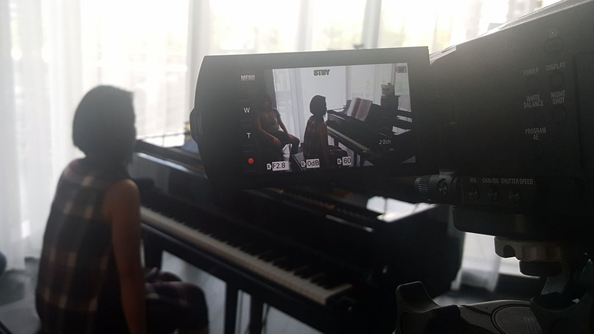
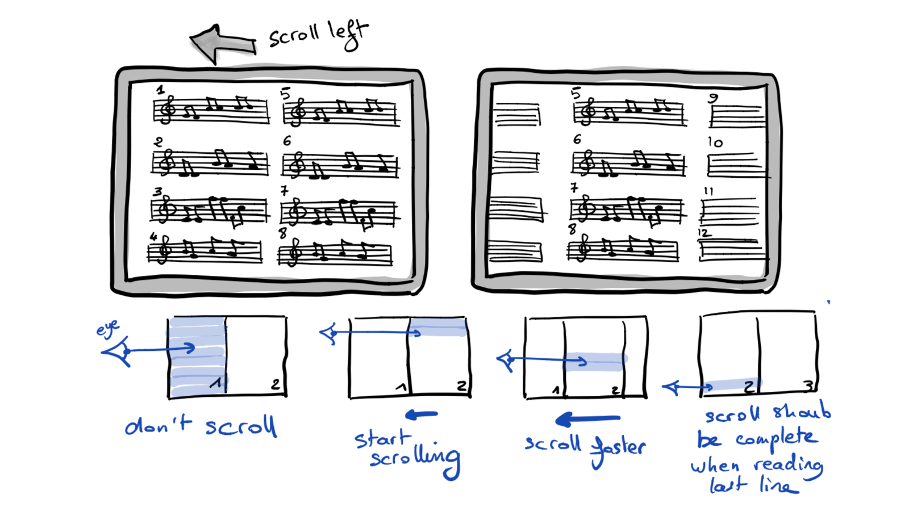

Fall 2018
Purpose
Understanding users,
 brainstorming and sketching design concepts,
prototyping solutions,
and evaluating with users.
User-centred design results in robust solutions that successfully address real human problems. In this course, students will learn about methods and principles of user-centred design to explore a problem space and the people within that space, identifying users’ needs, system constraints and requirements, and ultimately designing solutions that incorporate all those components. Designs will be iterated from initial concepts to really valuable solutions by gathering feedback and usability testing prototypes with users throughout the course. The course project will culminate with development of a robust design that addresses the identified problem. Final project presentations will take place at the end of the course.
All lectures will be condensed at the beginning of the course (Weeks 1-4), followed by critique sessions in tutorials (Weeks 5-13). Projects competition will be held (at the end of the course). This course has no final exam.
Learning Objectives
- to practice research methods for understanding user needs and practices,
- to interpret raw data and create design artifacts (e.g., personasjob stories, scenarios),
- to brainstorm, sketch and design prototypes that solve real user problems,
- to evaluate prototypes (one’s and others’) for usability, learnability and usefulness,
- to work in multidisciplinary design teams.
Pre-requisite
Schedule
-
W1: 6 Sep.
L1: Introduction
-
W2: 10 Sep.
L2: Observations
-
W2: 11 Sep.
L3: Interviews
-
W2: 13 Sep.
L4: Questionnaires
-
W3: 17 Sep.
L5: Design requirements and job stories
-
W3: 18 Sep.
L6: Brainstorming and ideation
-
W3: 20 Sep.
L7: Low-fidelity prototyping and evaluation
-
W4: 24 Sep.
L8: High-fidelity prototyping and evalaution
-
W4: 25 Sep.
L9: User testing
-
W4: 27 Sep.
L10: Communicating, reporting and presenting
-
W5: 4 Oct.
S1: Formative study design, instruments, and protocols
-
W6: 11 Oct.
S2: Data collection and analysis planning
-
W7: 18 Oct.
S3: Analysis results, design requirements, and job stories
-
W8: 25 Oct.
S4: High level design concepts and design walkthrough
-
W9: 1 Nov.
S5: Expert evaluation of low fidelity prototype (in class)
-
W10: 8 Nov.
READING WEEK: no classes
-
W11: 15 Nov.
S6: High fidelity prototype, summative study design, instruments, and protocols
-
W12: 22 Nov.
S7: Study results, expected revisions to the design
-
W13: 29 Nov.
S8: Project presentations (Tutorial competition)
-
W14: 6 Dec.
Competition finals